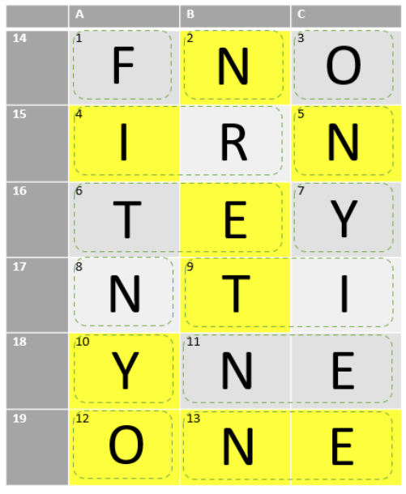

Solution: Chemistry Test
Answer: PAIN
Written by Xue Heng
We should start by answering all the questions, which can be done by a combination of googling and calculations. The answers are as follows:
- 9
- 7
- 8
- 77
- 7
- 52
- 39
- 7
- 22
- 39
- 10
- 8
- 10
- B
- A and C
- B
- B
- A
- A, B and C
For the short answer questions, we are told to fill in the answer sheet using our answers. However, numerical answers (which are all of them) will score no marks….. The key aha of this puzzle is that the answers are atomic numbers, and the cells have to be filled in with their corresponding element symbols instead, with one letter per cell! The overall theme of chemistry and “period” as well as “table” from the flavor text should help solvers make this intuitive leap.
For the multiple response questions, we shade the cells corresponding to the correct answers on the answer sheet. The completed answer sheet is below, with shaded cells in yellow:

Notice that the shaded cells spell out NINETY ONE and the unshaded cells spell out FORTY NINE, when read in row-major order. These should be interpreted as atomic numbers as well, with 91 corresponding to Protactinium (PA) and 49 corresponding to Indium (IN). We complete the final recursive step by putting these element symbols together to give the answer: PAIN.
Author's Notes
Chemistry exams back in school were a real pain for me. That aside, spelling numbers using element symbols was more constraining than I thought, but thankfully this answer fit very nicely (I originally wanted to write this puzzle for the answer SN+AG but couldn’t get it to work). I liked the recursive step in particular, where we used the numerical answers to the questions to get element symbols, then used the element symbols to spell two numbers, which have to be converted back to element symbols, and which are finally put together to get the answer to this puzzle.